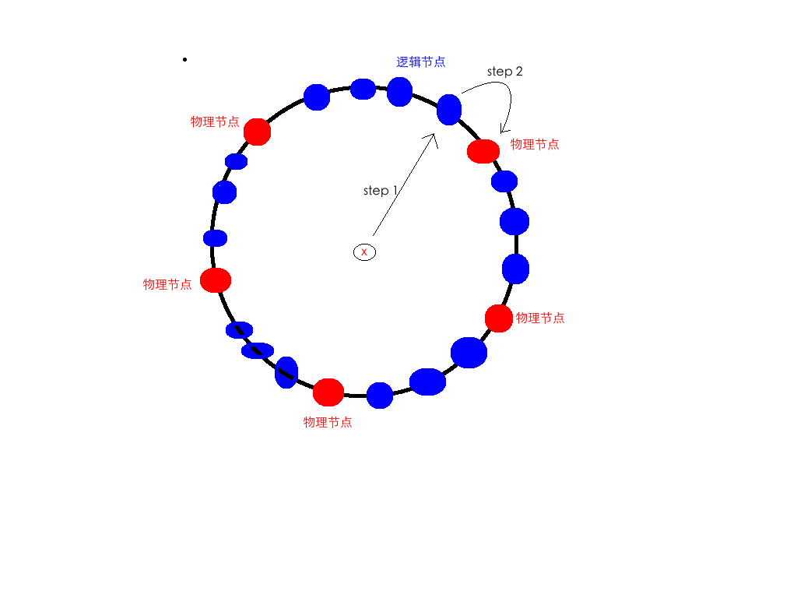

普通的基于模（mod)的hash算法，在分布式应用中，存在如下缺点：
当一个bucket节点失效或者新的bucket节点需要加入（容量扩展）的时候，由于算法：
f(x) = g(x) mod n
中的，n（bucket数目）发生变化，导致要有： 1-1/n 的数据需要挪动，代价比较大。
同样在新节点加入的时候也是如此。
为了解决这个问题，使得bucket的变动对hash结果的影响降至最小——移动最少量的数据。提出了一致性hash。
一致性hash的算法大意是在普通hash的基础上做了改进，将映射结果和实际存放数据的结果通过一种灵活的方式进行映射，使得第二种映射的局部化。
即，有2步的hash，而第一步是逻辑上的hash，不受物理节点的变动影响，第二步的hash是物理上的hash，负责将第一步的结果映射到具体的物理节点上面。
y = f(x)' = g(x) mod n
then
f(x) = h(y)
第一步逻辑上面映射的结果成为逻辑节点或者虚拟节点
第二步映射的结果成为最终结果，也就是物理节点。
第二步的h函数，通过找与本逻辑节点最近的物理节点，完成映射。这样的好处是，如果一个原来的物理节点被故障移除了，那么这个节点的数据将会被最终映射到其附近的节点，而其它的节点上的映射维持不变。
具体的实施过程，可以给物理节点和虚拟节点都分配id，同时保证这些id中物理节点散布均匀：
